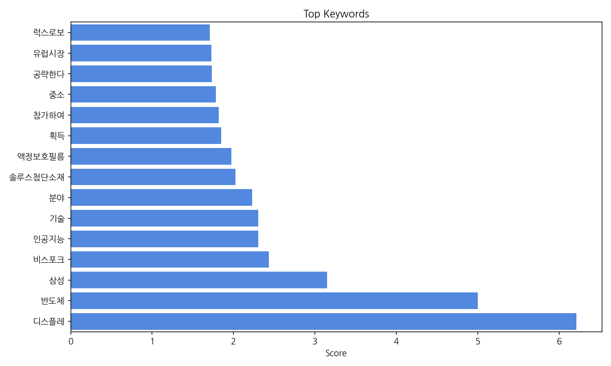
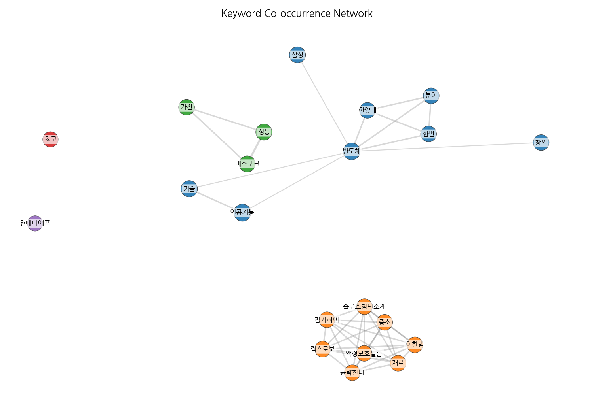
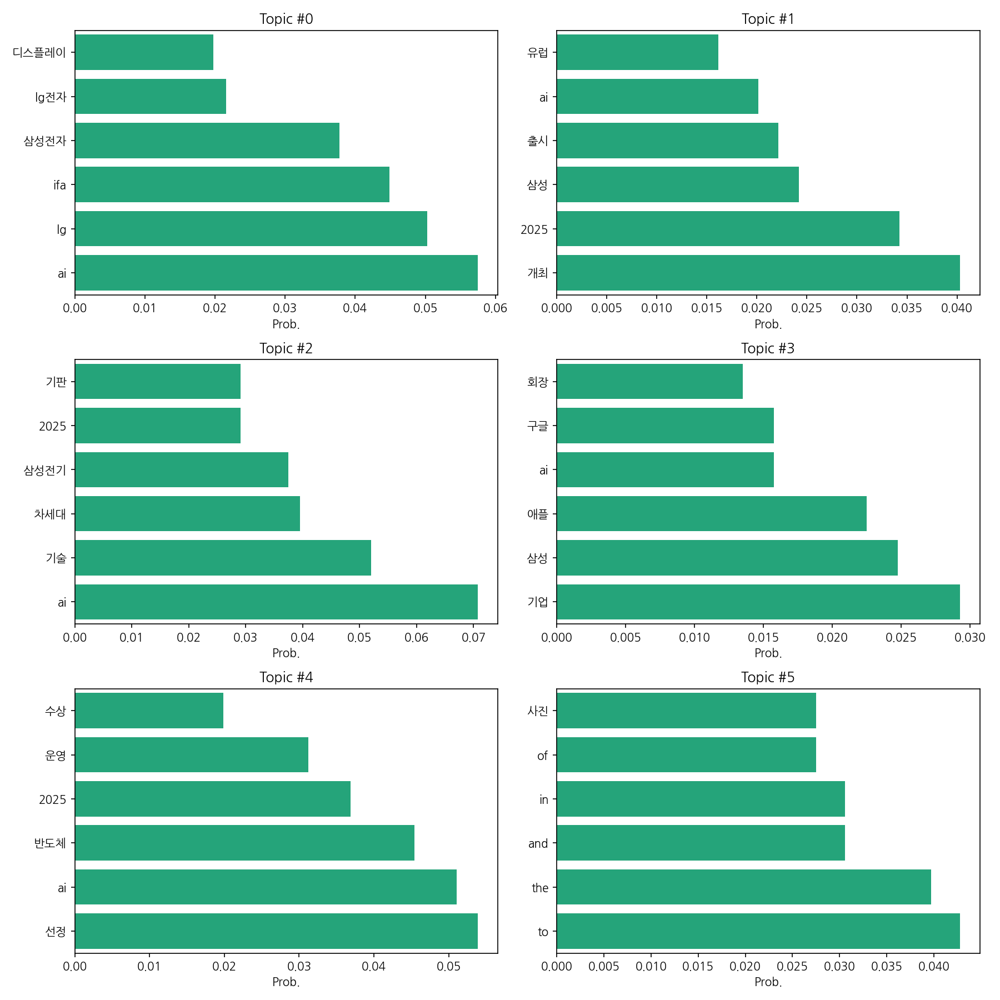
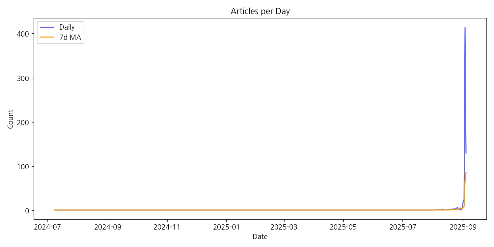

이번 기간 핵심 토픽과 키워드, 주요 시사점을 요약합니다.
핵심 맥락 설명: 제공된 데이터는 한국 뉴스에서 2024년 7월부터 2025년 9월까지 AI 기술과 관련된 주요 기업(삼성, LG, 애플, 구글 등)의 활동을 보여줍니다. 특히, IFA 등 주요 전시회 참가, 차세대 AI 기술 개발 및 출시, 그리고 AI 관련 시장 진출 및 경쟁 등이 주요 내용이며, 삼성과 LG를 중심으로 한 한국 기업들의 AI 기술 경쟁력 확보 노력이 두드러집니다. 이는 글로벌 AI 시장에서의 경쟁 우위 확보를 위한 한국 기업들의 전략적 움직임을 반영합니다.
최근 변화/스파이크: 2025년 9월 3일 기사 수가 급증(415건)한 것은 특정 이벤트 또는 뉴스 보도에 의한 것으로 추정됩니다. 이러한 급격한 증가는 특정 AI 관련 기술 발표나 시장 동향 변화를 반영하는 것으로 해석할 수 있습니다.
실무 인사이트:
AI 관련 뉴스 모니터링 시스템 강화: 2025년 9월과 같이 갑작스러운 뉴스 증가에 대비하여 실시간 뉴스 모니터링 시스템을 구축하고, 키워드 알림 기능을 활용하여 중요한 정보를 놓치지 않도록 합니다. 특히, 삼성, LG 등 주요 기업과 AI, IFA, 차세대 기술 등 키워드를 중심으로 모니터링해야 합니다.
| Rank | Keyword | Score |
|---|---|---|
| 1 | 디스플레 | 6.213 |
| 2 | 반도체 | 4.998 |
| 3 | 삼성 | 3.149 |
| 4 | 비스포크 | 2.431 |
| 5 | 인공지능 | 2.303 |
| 6 | 기술 | 2.301 |
| 7 | 분야 | 2.227 |
| 8 | 솔루스첨단소재 | 2.025 |
| 9 | 액정보호필름 | 1.973 |
| 10 | 획득 | 1.846 |
| 11 | 참가하여 | 1.82 |
| 12 | 중소 | 1.782 |
| 13 | 공략한다 | 1.731 |
| 14 | 유럽시장 | 1.728 |
| 15 | 럭스로보 | 1.708 |




핵심 맥락 설명: 제공된 데이터는 한국 뉴스에서 2024년 7월부터 2025년 9월까지 AI 기술과 관련된 주요 기업(삼성, LG, 애플, 구글 등)의 활동을 보여줍니다. 특히, IFA 등 주요 전시회 참가, 차세대 AI 기술 개발 및 출시, 그리고 AI 관련 시장 진출 및 경쟁 등이 주요 내용이며, 삼성과 LG를 중심으로 한 한국 기업들의 AI 기술 경쟁력 확보 노력이 두드러집니다. 이는 글로벌 AI 시장에서의 경쟁 우위 확보를 위한 한국 기업들의 전략적 움직임을 반영합니다.
최근 변화/스파이크: 2025년 9월 3일 기사 수가 급증(415건)한 것은 특정 이벤트 또는 뉴스 보도에 의한 것으로 추정됩니다. 이러한 급격한 증가는 특정 AI 관련 기술 발표나 시장 동향 변화를 반영하는 것으로 해석할 수 있습니다.
실무 인사이트:
AI 관련 뉴스 모니터링 시스템 강화: 2025년 9월과 같이 갑작스러운 뉴스 증가에 대비하여 실시간 뉴스 모니터링 시스템을 구축하고, 키워드 알림 기능을 활용하여 중요한 정보를 놓치지 않도록 합니다. 특히, 삼성, LG 등 주요 기업과 AI, IFA, 차세대 기술 등 키워드를 중심으로 모니터링해야 합니다.
| Idea | Target | Value Prop | Score |
|---|---|---|---|
| AI 기반 스마트팩토리 에너지 관리 솔루션 | 100명 미만의 중소 제조기업 | AI 기반의 에너지 관리 솔루션을 통해 실시간 에너지 사용량 모니터링, 이상징후 감지, 에너지 효율 개선 방안 제시를 제공합니다. 클라우드 기반으로 설치 및 유지보수가 간편하며, 합리적인 가격으로 제공하여 중소기업의 에너지 관리 부담을 줄여줍니다. 경쟁사 대비 AI 기반 예측 분석 기능을 통해 에너지 절감 효과를 극대화합니다. | 3.8 |
| AI 기반 개인 맞춤형 스마트 홈 에너지 관리 솔루션 | 30-50대의 고소득층 가구주, 에너지 절약 및 스마트홈 환경에 관심 있는 소비자, 2인 이상 가구 | AI 기반의 개인 맞춤형 에너지 관리 솔루션을 통해 에너지 소비량을 실시간으로 분석하고, 사용 패턴에 맞춰 에너지를 절약할 수 있도록 돕습니다. 사용자 친화적인 인터페이스와 간편한 사용법으로 누구나 쉽게 에너지를 관리할 수 있으며, 에너지 절약 목표 달성을 위한 맞춤형 팁과 정보를 제공합니다. 경쟁 솔루션 대비 AI 기반의 정교한 분석과 개인 맞춤형 서비스를 제공하여 차별화를 둡니다. | 3.8 |
| AI 기반 중소기업 맞춤형 생산 관리 플랫폼 | 100명 미만의 중소 제조기업, 특히 AI 도입 경험이 없는 기업 | AI 기반의 사용자 친화적인 인터페이스를 통해, 실시간 생산 현황 모니터링, 예측 기반의 생산 계획 수립, 불량률 감소를 지원합니다. 기존 시스템 대비 저렴한 비용으로 도입 가능하며, 전문가 없이도 손쉽게 사용할 수 있습니다. 데이터 기반의 의사결정을 지원하여, 생산성 향상 및 원가 절감에 기여합니다. | 3.8 |
| AI 기반 스마트 팩토리 안전 관리 시스템 | 100-500명 규모의 중소 제조기업 | AI 기반 영상 분석 기술을 통해 실시간으로 작업자의 안전 위험 요소를 감지하고 예방함으로써 안전사고를 최소화합니다. 기존 시스템 대비 저렴한 비용으로 효율적인 안전 관리가 가능하며, 숙련된 인력 부족 문제를 해결하는 데 도움을 줍니다. 사고 발생 시 신속한 대응을 위한 자동 알림 시스템을 제공합니다. | 3.8 |
| AI 기반 맞춤형 디지털 사이니지 솔루션 | 매출 증대를 원하는 소상공인(음식점, 카페, 소매점 등), 특히 10-50명 규모의 소규모 사업장 | AI 기반으로 고객의 선호도와 구매 패턴을 분석하여 맞춤형 콘텐츠를 자동 생성 및 배포합니다. 직관적인 인터페이스와 저렴한 비용으로 누구나 쉽게 사용 가능하며, 실시간 데이터 분석을 통해 마케팅 효과를 극대화합니다. 경쟁 솔루션 대비 콘텐츠 제작 및 관리 시간을 획기적으로 단축하고, 타겟팅 광고를 통해 매출 증대에 기여합니다. | 3.5 |